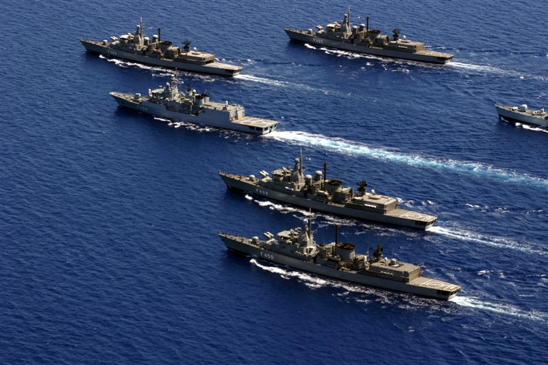
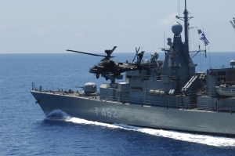
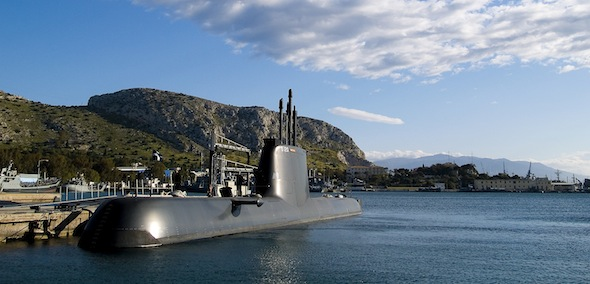
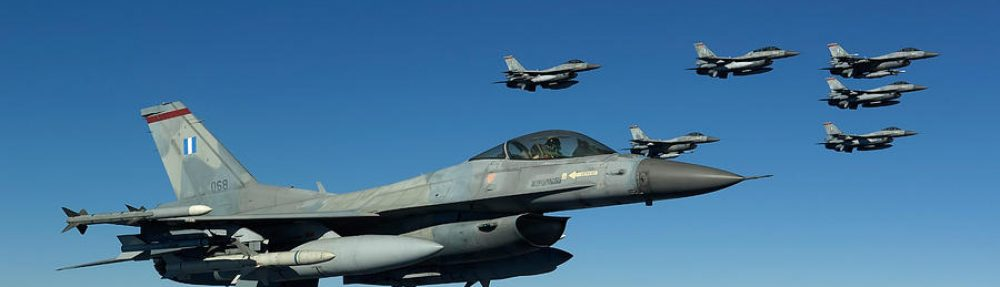

ATTN: Commander
LOCATION: Aegean and Eastern Medditeranean
INTEL/SITREP

Commander a strong naval force has been monitored near Cyprus. Several Turkish naval ships have been gathered around the Fatih (Conqueror) and Yavuz Drilling Sea Drilling ship. These Massive Platforms have begun drillings inside Cyprus Exclusive Economic Zone. Additionaly, the Turkish Air Force provides them with air support.
They are unfriendly but intel suggests that they wil become hostile if they feel threatened. Avoid flying over Turkey because this will be treated as act of war according to Turkish Minister of Defence, Hulusi Akkar. Also Barbaros Sea Explorer vessel is conducting research activities around Kastelorizo. Oruc Reis Explorer vessel is somewhere south of Cyprus. Condider them as priority targets.
The Drilling Ships along with the Sea Explorer vessels are your main targets
While you are ordered to perform a multi spectral Alpha Strike against their forces, keep in mind that NIS (National Intelligence Service) informers inside Turkish Supreme National council suggest that the turkish side is also preparing for a pre-emptive strike against our forces.
Check the no-fly zones between Crete and Cyprus. For these areas, Turkey have published navtex that they will conduct Live Fire Exercises and anyone in the vicinity of these area might be condidered as hostile.
Turkish Naval forces gave an Ultimamum that: "Greek Naval forces should withdraw from their positions in Eastern Aegean. In case of advancement this is an act of war".
This translates to an updated "Casus Beli" as in the crisis of 1996 IMIA and immediate start of hostilities!
Commander, your main mission is to find and destroy the Turkish Drilling ships along with a number of Sea Explorer vessels. This action will send a strong message to the Turkish side to withdraw from Cyprus EEZ. Recon is a primary priority. Turkey has an unfriendly posture but the TDK (turkish navy) have declared that it would not hesitate to shoot first if you are flying close to the Platforms and Explorer Ships (check No-Navigation Zones). Also avoid flying over turkish soil as this will be seen as hostile activity. You might have to use your submarines to get a closer look around the platform if you manage to stay undetected. A big number of civillian ships are passing through the contested area. Avoid any collateral damage as this will cause us international political losses . Inflict maximum damage to the turkish naval presence but remember that your High value target is the drilling ship itself!
Currently your Mirage 2000 EGM are arming for a AsuW strike mission against Turkish Naval Forces. You can alternatively reroute to Kasteli AFB if you want to Turkish Naval Forces in Eastern Med. To support your TASMO missions, a group of C130 can transfer the remaining AM-39 Exocet missiles there. It is up to you either to use Kasteli AFB as FOB for your TASMO operations or stick to Tanagra AFB and use long strike loadouts
Kasteli is the closest Forward Operating Airforce Base (FOB) we have against their naval forces in Eastern Med.
EXECUTION
Your orders are the following:
A) Eliminate the Yavuz and Fatih Sea Oil Drilling platforms near Cyprus
B) Eliminate the Barbaros and Oruc Reis Research Vessels
C) Land forces in the North will be placed in alert but will assume a defensive posture and will not be for now under your command
D) You have been granted permission to hit major military land based targets in-depth inside Turkey if you deem that they pose a high risk to the safety of the country or armed forces. The furthest target you are authorized to strike is the Eskisehir AFB
E) National Intelligence Service (Intel) suggests that there are two S400 battalions. One battalion is placed near Ankara and the other is expected in the vicinity area north-west of Cyprus. Even if their crew is inexperienced or the deliveries of the missiles haven't finished yet, they pose a serious threat. Monitor closely and pay extra caution, with its superior range and sensors they probably cover both their Capital and their main naval forces in Eastern Mediterranean. Destroying their S400 battallion while it is not the highest priority, it will contribute to our cause massively in military and political terms.
F) Bonus Mission: You have been granted permission to hit key insustrial facilities in Turkey, including Turpas Oil Refinery located in Izmir, TUSAS Engine Industrial Complex located in Eskisehir and Roketsan Missile Industrial Complex located in Ankara
G) You have 36 hours to accomplish your mission.
H) Avoid collateral damage and any civilian casualties. Your Rules of Engagement are Weapons Tight.
FRIENDLY FORCES
Our majority of our Air/Naval forces will participate in the Operation

Hellenic Navy (HN)
HYDRA #1 SAG Group: MEKO 200 FFG, 2 x S class FFG, 2 x La Combantante III FAC, Super Vita FAC
HYDRA #2 SAG Group: MEKO 200 FFG, 2x S class FFG, La Combantante III FAC, Super Vita FAC
HYDRA #3 SAG Group: MEKO 200 FFG, S class FFG, La Combantante III FAC
Maritime Patrol: 1 x P-3B Maritime Patrol, 1x P266 Maxitis OPV
Hideout Locations in Aegean: 3 x La Combantante IIIb FAC, Super Vita FAC
Coastal Batteries
3 x SSM Exocet Coastal Battery, North Aegean, 3 x SSM Exocet Coastal Battery, Cyprus

Submarines
3 x U 209/100, 3 x U209/1200, 1 x U209 AIP, 4 x U214 AIP

Hellenic Air Force (HAF)
2 x EMB-145 H AEW&C, Souda AFB , 2 x EMB-145 H AEW&C, Elefsina AFB
OECW
2 x EC130 Compass Call, Kasteli AFB
Tanagra AFB - 114 TFW
Mirage 2000EG (capable for AM-39 Exocet), Mirage 2000-5 mk2 (AAW 6XMica or SCALP EG Deep Strike)
Souda AFB - 115 TFW
F-16 Block 52+(HARM,LGB,JSOW, Maverick)
Araxos AFB -116 TFW
F-16 Block 52+ Advanced (HARM,LGB, JDAM, Recon Pod)
Andravida AFB - 117 TFW
F-4E Phantom II AUP (LGB, AGM-65G, AMRAAM B capable)
Larisa AFB - 110 TFW
F-16 Block 52+(LGB, JDAM, JSOW, Maverick)
Agxialos AFB - 111 TFW
F-16 Block 30 (AFDS anti-runway)
F-16 Block 50 (HARM, LGB, Maverick)
Skyros AFB - 138 SQN
F-16 Block 30 , readiness AAW
Santorini - FOB
F-16 Block 30, readiness AAW, F-16 Block 50, readiness AAW
Greek Army Support
OH-58D Kiowa Scout Helicopter, secret heliports in Aegean islands
M270 Launchers (ATACMS), Rhode , Samos , Chios , Lesvos Island
Greek Navy Spec Ops
1 x OYK (SEAL team), Izmir Strait, 1 x OYK (SEAL team), Dalaman AFB, 1 x OYK (SEAL team), Imvros Island
Cyprus National Guard Forces
5 x Mi-35 AT, Pafos AFB , 2 AH-64 Apache AT, 3 Gazzele Helicopters
1 x S-300 Hi-SAM battery
BUK M1-2 batteries medium SAM, Tor M1 batteries SAM, Skyguard (RIM-7) medium SAM
1 x BM-21 GRAD MLRS, 3 x SSM Exocet Coastal Battery
ENEMY FORCES
Our intelligence confirms that the vast majority of the Turkish Air & Naval forces have mobilized or are in the process of. Pay special attention to a number of home developed systems that we have limited info and could pose a mortal danger for our forces:
-SOM: Air launched cruise missile with an estimated range of over 100+ nautical miles
-Harpy: SEAD Killer-UAV, unknown location significant range of over 200 nautical miles
-WS-1A/B MLRS with significant range and accuracy, located in Minor Asia
-Koral EW : Ground based Mobile Jammers Offensive Electronic Warfare (OECW), unknown location probably dispersed around Turkey
Surface
COMMAND AND SIGNAL
Command: ATA (Larissa)
Signal: EMCON State C (Unrestricted Emissions)